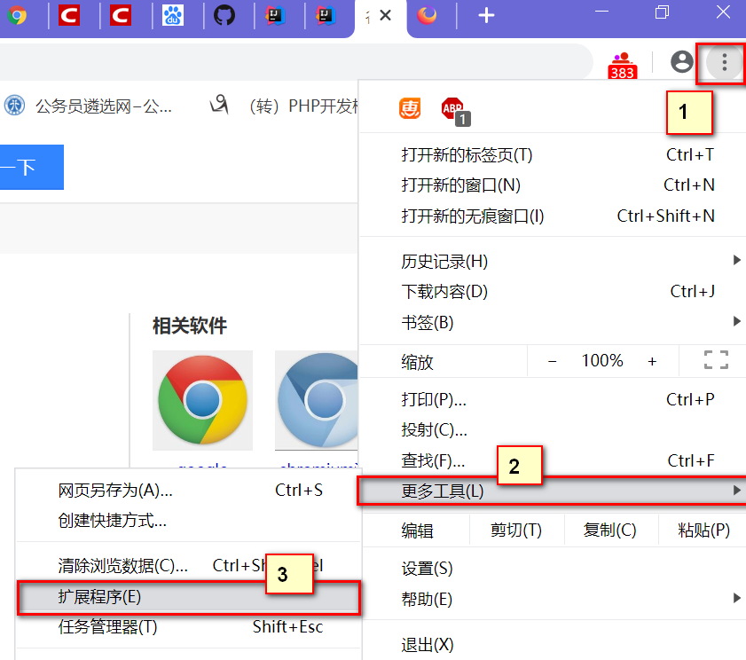
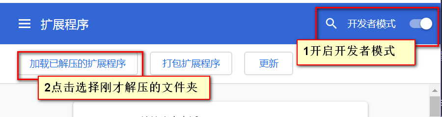
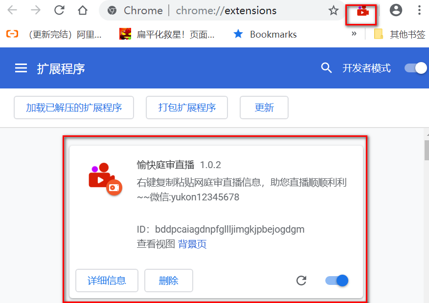
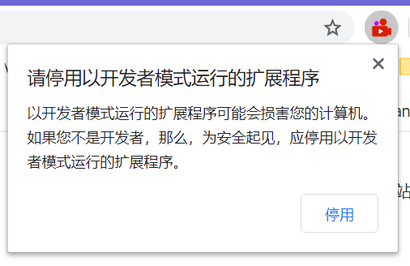
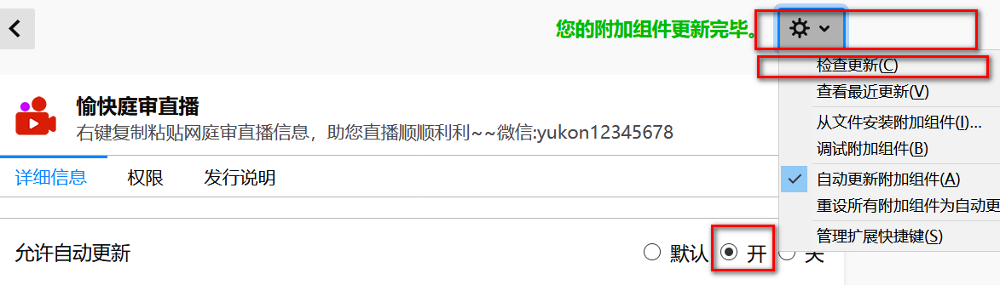

如果没有安装chrome的外网电脑，访问https://www.google.cn/intl/zh-CN/chrome/ 下载安装。
[点击此处]下载扩展压缩包并解压到某个特定文件夹。
点击浏览器右上角的菜单键图标，依次选择“更多工具”-“扩展程序”。(如下图)

进入扩展程序页面后，开启“开发者模式”，点击“加载已解压的扩展程序”，选择之前解压缩到的文件夹(如下图)

右上角出现图标，即表示安装成功

关闭谷歌浏览器后重新打开，会出现提示“请停用开发者模式”，记住 一定不要点击"停用"，选择右上角关闭按钮即可。(万一失误点击了，请按步骤2、3操作即可)

如有需要更新，右击右上角的图标，选择“从chrome中删除”，按[二、安装扩展]安装扩展的步骤重新安装即可。
